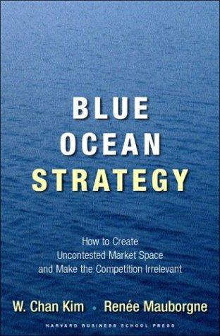

W·钱·金（W. Chan Kim）与勒妮·莫博涅（Renée Mauborgne）是欧洲工商管理学院（INSEAD）的战略学教授，也是INSEAD蓝海战略研究院的创始院长。两人自1990年代开始合作研究，历经十余年，系统考察了超过三十个行业、一百五十多次商业行动，最终于2005年由哈佛商学院出版社出版了《蓝海战略》。本书在全球范围内引发了广泛反响，迄今已售出逾四百万册，被译为四十九种语言，在五大洲均登上畅销书榜单，并于2015年出版了增订版，进一步更新了案例与分析框架。
《蓝海战略》的核心洞见是对传统竞争理论的一次根本性颠覆。绝大多数企业将战略精力集中于在已有竞争对手的市场中争夺份额——这片市场因竞争激烈、利润日渐稀薄，被作者比喻为"红海"（red ocean）。两位作者通过大量案例研究发现，那些实现真正突破性增长的企业，往往不是在红海中拼杀出来的，而是创造了一片全新的市场空间，使竞争本身变得无关紧要——这就是"蓝海"（blue ocean）。蓝海战略的本质不是在"差异化"与"低成本"之间做取舍，而是同时追求两者：通过重构产品或服务的价值要素，在为客户创造更高价值的同时降低成本，实现所谓的"价值创新"。
书中提出了一系列具有实操指导意义的分析工具，其中最核心的是"战略画布"（Strategy Canvas）和"四动作框架"（Four Actions Framework）——包括消除、减少、增加、创造四个维度，帮助企业系统性地重新思考自身的价值主张。作者还通过太阳马戏团（Cirque du Soleil）、西南航空、任天堂Wii等广为人知的案例，生动阐释了蓝海战略在不同行业的实践路径。这种将抽象理论与具体案例紧密结合的写作方式，使本书在学术界与商业实践界均获得了罕见的双重认可。
2019年，金与莫博涅被《思想家50》（Thinkers50）评选为全球最具影响力的管理思想家。2023年，两人在哈佛商学院评论百年庆典上，被列为过去一百年间对全球管理思想影响最深远的四位学者之一。对于战略规划者、创业者以及任何思考企业增长路径的读者，《蓝海战略》提供的不仅是一套分析工具，更是一种从根本上重新定义竞争逻辑的思维范式。在竞争日趋激烈、同质化压力持续上升的商业环境中，这一思维范式的价值只增不减。